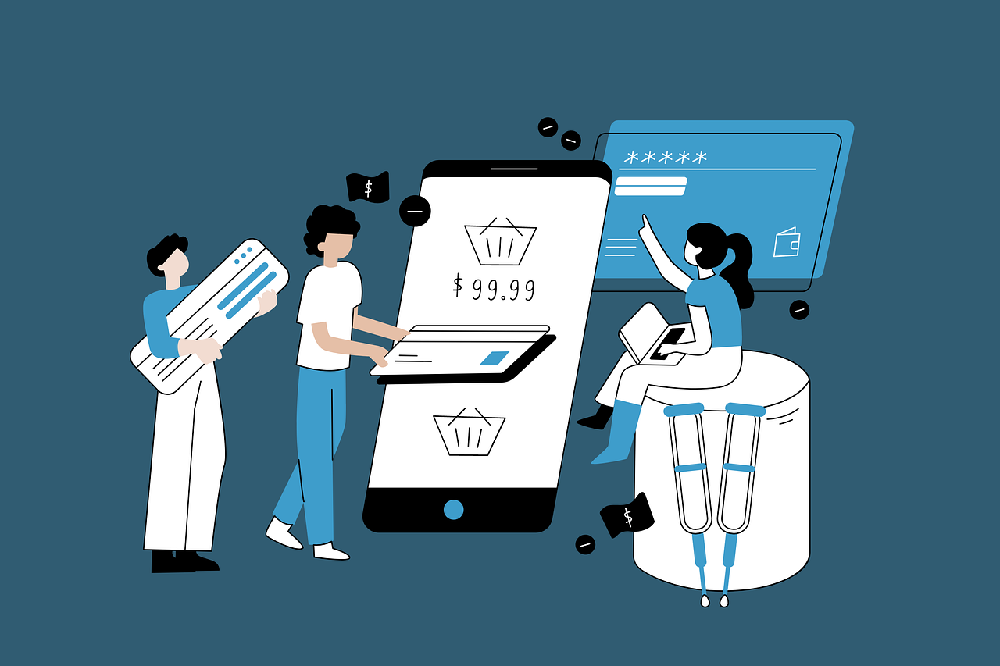

E-Business, which is also known as Electronic Business is when a company uses computers and the internet to do all its business work. It is not about selling things to people it is about how the whole company works, both inside and outside.
The scope of E-Business is really big. It includes things like hiring people using apps doing accounting work like filing taxes automatically making products with the help of internet connected sensors, on machines and coordinating with other companies to get supplies.
The main goal of E-Business is to make things work better save money and do things faster. This happens when companies use computers to send information to each other of using paper.
People usually think that E-commerce and E-business are the same thing. They are actually different. The easiest way to understand this is to think of it like this: E-commerce is a part of E-business.
| Feature | E-Commerce | E-Business |
|---|---|---|
| Definition | Specifically the buying and selling of goods/services online | The conduct of all business processes through digital tools |
| Focus | Outward-facing (Customer & Transaction) | Both Inward and Outward-facing (Internal & External) |
| Requirement | Only needs a website/app and a payment gateway | Needs a website/app + CRM, ERP, and automated internal systems |
| Activity | Bidding, ordering, and paying | Procurement, stock management, HR, and R&D |
Transactions are classified based on who is selling and who is buying.
One company provides products or services to another company. This represents the main portion of the digital economy.
Usage: A manufacturer selling raw materials to a factory or a software company selling security tools to a bank.
Example: Alibaba (wholesale) or Salesforce (selling software to other firms)
An E-distributor is the online version of a traditional wholesaler. It is a company that supplies products and services directly to individual businesses.
How it Works: The e-distributor owns the products (inventory) and sells them through an electronic catalog. Instead of a business calling a sales rep, they log into the distributor's portal and order directly.
Key Feature: They typically serve a large number of customers with a vast array of products.
Example: Grainger or Amazon Business. A construction company logs into Grainger to buy 500 drill bits. Grainger owns those bits, ships them, and invoices the company.
E-procurement is the digital automation of an organization's entire purchasing process. It isn't just a "store". it's a software system that a company uses to manage its buying.
How it Works: A large company (like a hospital or university) installs an e-procurement platform. Employees use it to request items, managers use it to approve them, and the system automatically sends the "Purchase Order" to the supplier.
Key Features: Includes digital tendering, e-invoicing, and automated payment triggers. It helps companies stop "maverick spending" (employees buying things outside of official channels).
Example: Ariba (by SAP) or Coupa. A nurse needs new scrubs; she requests them in the hospital's e-procurement system, her supervisor clicks "Approve" on their phone, and the order is instantly sent to the scrub vendor.
An E-hub is a digital platform that brings together many buyers and many sellers in one place. Unlike an e-distributor (who owns the goods), an e-hub is a neutral intermediary-it provides the "venue" for others to trade.
There are two main types based on who they serve:
These hubs focus on a single industry or niche. They provide deep, specialized knowledge and products for that specific sector.
Goal: To serve every segment of a particular industry (from raw materials to finished parts).
Example: DirectAg (for agriculture) or MetalSite (for the steel industry). A car manufacturer goes to a steel e-hub because they need a very specific grade of industrial metal that only specialized sellers carry.
These hubs provide products and services across many different industries. They focus on "indirect goods"-things that every business needs regardless of what they actually make.
Goal: To provide general business supplies like office furniture, cleaning supplies, or MRO (Maintenance, Repair, and Operations) items.
Example: Cvent (for event planning) or MRO.com. A bank, a school, and a gym all need paper and pens; they all go to a horizontal hub to get them because the products are the same across all their industries.
In this model, a business sells its products or services directly to a consumer.
Usage: Traditional online retail
Example: Netflix,Spotify
A portal is a "gateway" to the internet. It doesn't usually sell products directly. Instead, it aggregates information from diverse sources into a single interface.
Revenue Model: Primarily advertising and referral fees
Example: Yahoo or MSN. They provide news, email, weather, and search in one place to keep you on their site as long as possible.
This is the online version of a traditional retail store. An e-tailer sells physical or digital products directly to the end consumer.
Revenue Model: Product sales (markup)
Example: Amazon (the retail side) or a specialized site like Nike.com
A content provider creates or distributes digital intellectual property such as news, music, video, or artwork.
Revenue Model: Subscriptions ("Paywalls") or "Pay-per-view" fees
Example: Netflix, Spotify or The Wall Street Journal
A transaction broker facilitates a deal between a buyer and a seller. They don't own the product or perform the service. They just provide the platform to make the transaction happen securely.
Revenue Model: Primarily advertising and referral fees
Example: : Expedia (brokers flights/hotels), E-Trade (stock trading), or PayPal
nstead of selling a physical "thing," a service provider offers an online tool or expertise.
Revenue Model:Subscriptions, sales of services, or data collection
Example: Google Maps (location services), Dropbox (storage), or Canva (design tools)
A community provider creates a digital environment where people with similar interests can transact, share information, and communicate.
Revenue Model: Advertising, premium memberships, or affiliate links
Example: Facebook, Reddit or LinkedIn
One individual sells to another individual, usually through a third-party platform that handles the payment.
Usage: Selling used items or handmade crafts to another person
Example: eBay, Facebook Marketplace
An individual provides a product or service that a company buys.
Usage: This includes influencers selling marketing services or freelancers selling their skills to a firm
Example: Upwork (freelancers) .
Government agencies work with companies to get things done.
Usage: Often involves complex bidding and high-security standards (like providing cloud storage for a city's data)
Example: Lockheed Martin selling to the military or a construction firm winning a digital bid for a new road
A company gives services, information or products to the people who work for the company.
Usage: Internal portals where employees can buy company products at a discount or manage their health insurance
Example: A Company Intranet where workers order office supplies for their home offices
The government is using platforms to give people services. They are doing this so people can get what they need directly from the government.
Usage: Services like paying taxes, renewing a driver’s license, or applying for social security
Example: National Tax Portal